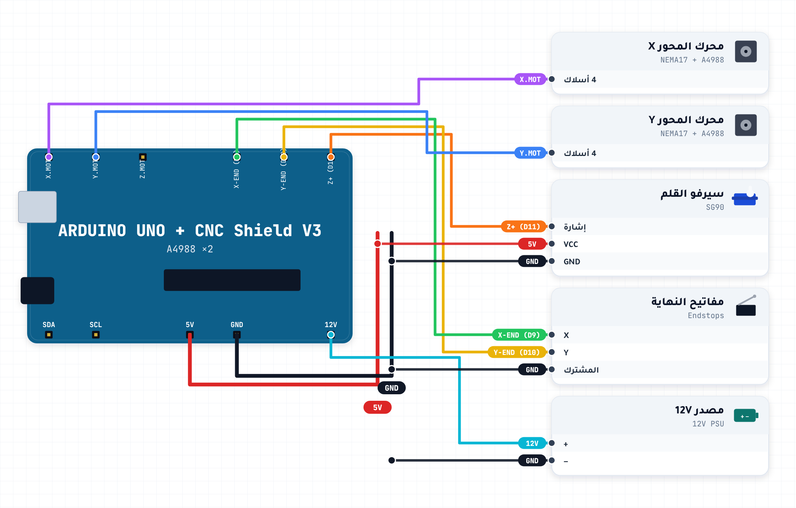

▶فيديو الشرح
آلة ترسم على الورق بقلم: محركا خطوة للمحورين X و Y وسيرفو يرفع القلم ويُنزله وفق أوامر G-code.
1المكونات
ARDUINO UNO + CNC Shield V3boardمحرك المحور XNEMA17 + A4988محرك المحور YNEMA17 + A4988سيرفو القلمSG90مفاتيح النهايةEndstopsمصدر 12V12V PSUأسلاك توصيلJumper Wiresلوحة تجاربBreadboard
2مخطط التوصيل

اضغط على المخطط لتكبيره · نسخة SVG عالية الدقة
| القطعة | الطرف | يوصل إلى |
|---|---|---|
| محرك المحور X | 4 أسلاك | X.MOT |
| محرك المحور Y | 4 أسلاك | Y.MOT |
| سيرفو القلم | إشارة | Z+ (D11) |
| سيرفو القلم | VCC | 5V |
| سيرفو القلم | GND | GND |
| مفاتيح النهاية | X | X-END (D9) |
| مفاتيح النهاية | Y | Y-END (D10) |
| مفاتيح النهاية | المشترك | GND |
| مصدر 12V | + | 12V |
| مصدر 12V | − | GND |
3الكود
المكتبات المطلوبة (من Arduino IDE ← Sketch ← Include Library ← Manage Libraries):
- Servo (مدمجة مع Arduino IDE)
/* المستوى المتطور — المشروع 6: آلة الرسم الذكية ثنائية المحاور (CNC XY Plotter) كتاب: 38 مشروع في شهر — لؤي النصري (@robotlouay) هذا الكود مفسّر G-code مبسّط وتعليمي (G0/G1/G28/M3/M5) — مناسب لفهم الفكرة. للاستعمال الاحترافي ارفع برنامج GRBL على الأردوينو واستعمل Universal G-code Sender. المكونات: Arduino Uno + CNC Shield V3 + مشغلان A4988 + محركا خطوة NEMA17 + سيرفو SG90 لرفع القلم + سيور GT2 وبكرات التوصيل: المحور X: STEP → D2 DIR → D5 المحور Y: STEP → D3 DIR → D6 ENABLE → D8 مفتاح نهاية X → D9 مفتاح نهاية Y → D10 (بين المنفذ و GND) سيرفو القلم: إشارة → D11 (منفذ Z+/SpnEn في الشيلد) ، 5V و GND التغذية: 12V على مدخل الطاقة في CNC Shield الاستعمال: Serial Monitor (115200 ، Newline) وأرسل أوامر مثل: G28 ← العودة إلى الصفر M3 ← إنزال القلم M5 ← رفع القلم G1 X40 Y20 ← رسم خط إلى (40,20) بالمليمتر */ #include <Servo.h> const int X_STEP = 2, X_DIR = 5, Y_STEP = 3, Y_DIR = 6, EN_PIN = 8; const int X_LIMIT = 9, Y_LIMIT = 10, PEN_PIN = 11; const float STEPS_PER_MM = 80.0; // GT2 + بكرة 20 سن + 1/16 microstep const int PEN_UP = 60, PEN_DOWN = 20; const float MAX_X = 200, MAX_Y = 200; Servo pen; float posX = 0, posY = 0; String line = ""; void pulse(int pin) { digitalWrite(pin, HIGH); delayMicroseconds(5); digitalWrite(pin, LOW); } // خوارزمية Bresenham لتحريك المحورين معاً في خط مستقيم void moveTo(float x, float y, int stepDelayUs) { x = constrain(x, 0, MAX_X); y = constrain(y, 0, MAX_Y); long dx = lround((x - posX) * STEPS_PER_MM); long dy = lround((y - posY) * STEPS_PER_MM); digitalWrite(X_DIR, dx >= 0); digitalWrite(Y_DIR, dy >= 0); dx = labs(dx); dy = labs(dy); long steps = max(dx, dy), ex = 0, ey = 0; for (long i = 0; i < steps; i++) { ex += dx; ey += dy; if (ex >= steps) { ex -= steps; pulse(X_STEP); } if (ey >= steps) { ey -= steps; pulse(Y_STEP); } delayMicroseconds(stepDelayUs); } posX = x; posY = y; } void home() { pen.write(PEN_UP); delay(300); digitalWrite(X_DIR, LOW); while (digitalRead(X_LIMIT) == HIGH) { pulse(X_STEP); delayMicroseconds(600); } digitalWrite(Y_DIR, LOW); while (digitalRead(Y_LIMIT) == HIGH) { pulse(Y_STEP); delayMicroseconds(600); } posX = posY = 0; } float valueAfter(const String& s, char key, float fallback) { int i = s.indexOf(key); return i < 0 ? fallback : s.substring(i + 1).toFloat(); } void runCommand(String s) { s.trim(); s.toUpperCase(); if (s.length() == 0) return; if (s.startsWith("G28")) home(); else if (s.startsWith("M3")) { pen.write(PEN_DOWN); delay(250); } else if (s.startsWith("M5")) { pen.write(PEN_UP); delay(250); } else if (s.startsWith("G0")) moveTo(valueAfter(s, 'X', posX), valueAfter(s, 'Y', posY), 300); // حركة سريعة else if (s.startsWith("G1")) moveTo(valueAfter(s, 'X', posX), valueAfter(s, 'Y', posY), 700); // حركة رسم else { Serial.println("error: unknown"); return; } Serial.println("ok"); } void setup() { Serial.begin(115200); pinMode(X_STEP, OUTPUT); pinMode(X_DIR, OUTPUT); pinMode(Y_STEP, OUTPUT); pinMode(Y_DIR, OUTPUT); pinMode(EN_PIN, OUTPUT); digitalWrite(EN_PIN, LOW); pinMode(X_LIMIT, INPUT_PULLUP); pinMode(Y_LIMIT, INPUT_PULLUP); pen.attach(PEN_PIN); pen.write(PEN_UP); Serial.println("Plotter ready"); } void loop() { while (Serial.available()) { char c = Serial.read(); if (c == '\n') { runCommand(line); line = ""; } else if (c != '\r') line += c; } }
4كيف يعمل؟
- G28 يعيد الآلة إلى نقطة الصفر
- M3 ينزل القلم و M5 يرفعه
- G1 X Y يرسم خطاً مستقيماً (Bresenham)
- للاحتراف: GRBL + Universal G-code Sender
⚠ قبل توصيل الكهرباء: راجع كل سلك مع الجدول أعلاه، وتأكد من عدم وجود تماس بين 5V و GND. اختر اللوحة والمنفذ الصحيحين من قائمة Tools في Arduino IDE.